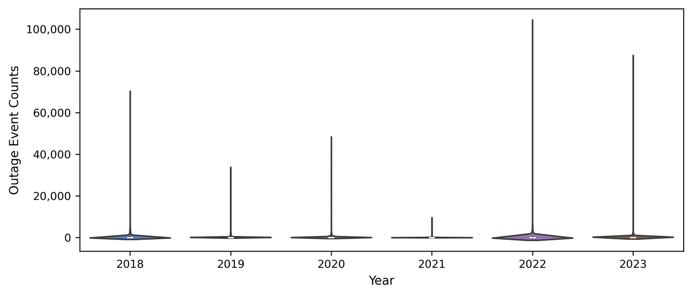
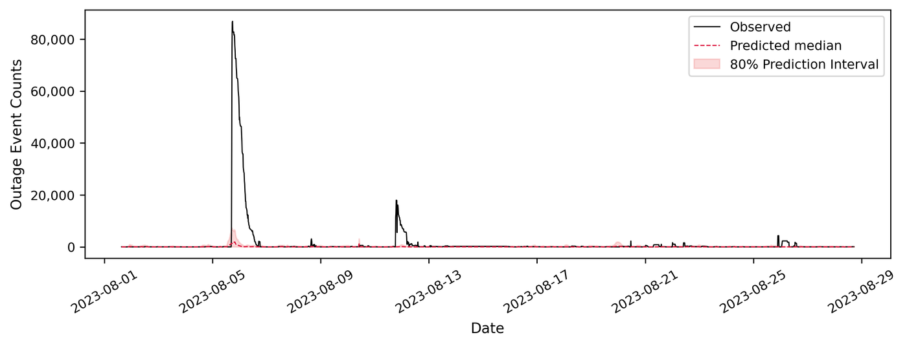
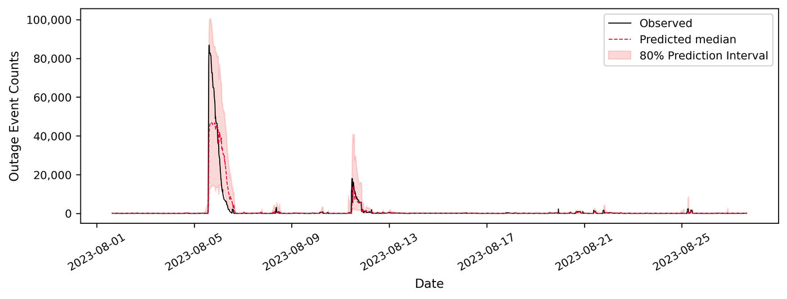
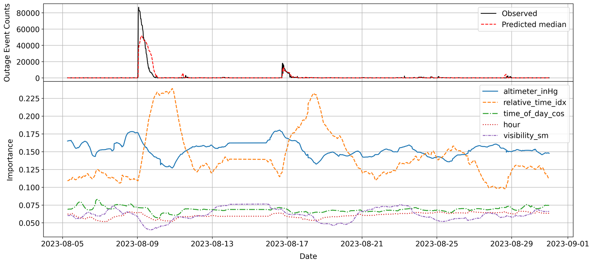
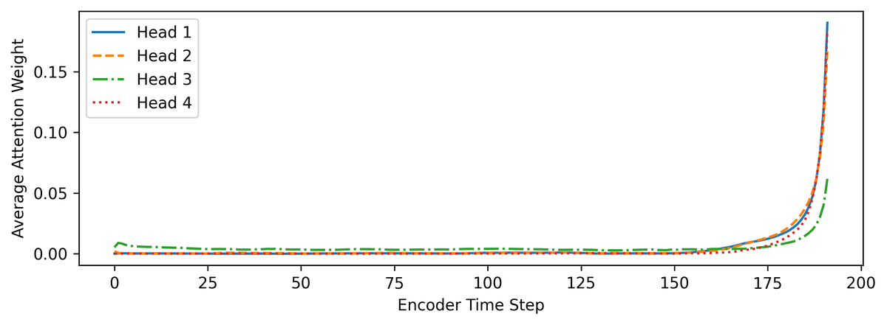
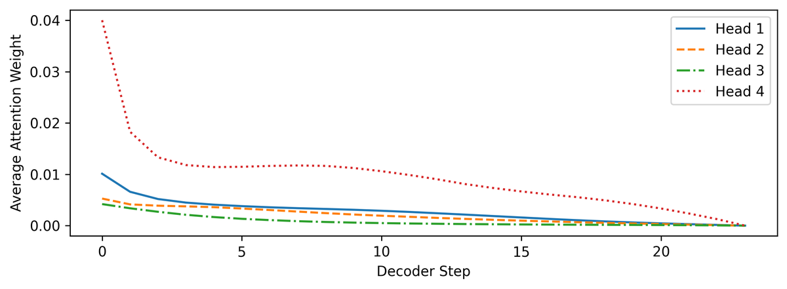

Single County Reviewed
Forecasting High-Impact, Low-Probability Power Outages with Temporal Fusion Transformers: A Case Study of Wake County
This study evaluates the Temporal Fusion Transformer (TFT) for short-term outage prediction in Wake County, North Carolina, by integrating 15-minute interval outage data from the U.S. Department of Energy's EAGLE-I platform (2018–2023) with synchronized meteorological observations from the Automated Surface Observing System (ASOS). Its performance was benchmarked against a Long Short-Term Memory (LSTM) network.
The challenge
Outage data are long-tailed
Most outages affected fewer than several dozen customers, while the top 1% of outage magnitudes included large-scale events that impacted thousands to tens of thousands of customers. Because the distribution deviates significantly from normality, a quantile forecasting approach was adopted in place of point forecasting, estimating the 10th, 50th, and 90th percentiles at each time step.


Findings
1TFT outperformed the LSTM across all evaluation metrics
TFT achieved an R² of 0.777 and reduced MAE by nearly 50 percent relative to the LSTM, with consistently lower Quantile RMSE across the 10th, 50th, and 90th percentiles. The LSTM yielded an R² close to zero and consistently underrepresented both the timing and magnitude of high-impact events.




| Model | R² | MAE | Quantile RMSE (10%) | Quantile RMSE (50%) | Quantile RMSE (90%) |
|---|---|---|---|---|---|
| LSTM | −0.004 | 1,600.483 | 8,917.003 | 8,790.522 | 8,412.612 |
| TFT | 0.777 | 837.665 | 7,251.650 | 4,218.045 | 7,265.227 |
2Atmospheric pressure and recent temporal context were dominant predictors
The variable selection network showed that atmospheric pressure (altimeter) kept a relatively stable and elevated importance, with a pronounced increase before outage events, suggesting it may serve as a leading indicator. The importance of the relative time index surged around sharp increases in outage magnitude.


In the attention analysis, all encoder heads placed greater weight on time steps immediately preceding the prediction point, while Head 3 distributed attention more broadly. In the decoder, attention was highest in the early stages of the prediction window and gradually decreased.




Study details
- Outage data: EAGLE-I recorded electricity outages (Brelsford et al. 2023), Wake County, NC · 15-minute intervals · weather-related events identified with the NOAA Storm Events Database and the PNNL Event-Correlated Outage Dataset
- Weather data: ASOS observations (temperature, dew point, wind, visibility, cloud coverage, lightning, altimeter, humidity) and five composite variables, resampled to 15 minutes · population and households as static covariates
- Setup: summer months (June–October) · training 2018 to June 2022, validation July 2022, test August 2023 · 2-day input window, 6-hour forecast horizon · quantile loss
- Limitations: extreme outages are rare in the training data; only weather-related outages were considered, excluding grid topology, infrastructure condition, and operational practices